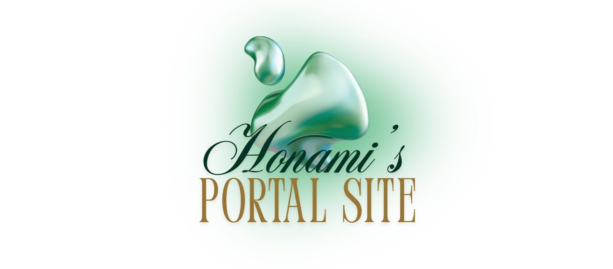

Exploring web design and development through creative projects
WWR
Developed a white water rafting website focused on adventure and safety. This project highlights guided trips, strong branding, and a clean, responsive layout.
ICE
Worked on five ICE challenge tasks, each lasting about an hour, practicing how to think through HTML/CSS from a finished design by applying what I learned.
About Me
Learn more about me and my journey in web design and development. I enjoy creating clean, user-friendly websites that combine design and code.